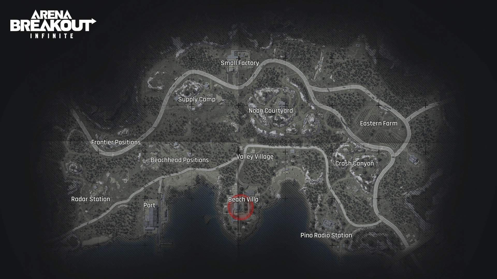

1. Vue d'ensemble
Valley est la carte « riche » de Kamona : villas en bord de mer, complexes hôteliers, port et falaises. Loot haut, compétition haute. En S7, c'est une Infected Zone (standard, pas Heavy) — les mutants sont là, mais la densité joueur domine le rapport de force.
2. Hotspots
- Beach Villa — le coffre à jouets : meilleur loot de la carte, arrivez en premier ou jamais.
- Port — 1 coffre + 7 boîtes d'armes typiquement ; itinéraire côtier rentable.
- Hôtels — documents boxes (blueprints S7), tiroirs, chambres de luxe.
- Falaises North/South — sniper perches avec vue sur les rotations.
3. Route côtière (low-risk)
- Spawn côte → 2. Sheds côtiers → 3. Port (loot) → 4. Extraction Northeast/Northwest Road.
- Évitez Beach Villa si plus de 3 squads y tournent — le ratio risk/reward s'inverse.
- Hunter's Path (sans sac) est l'extracteur classique de cette carte — jouez en conséquence.
4. S7 — Valley Infected Zone
- Mutants standards : Reapers (acide terrain), Ambushers (leap + pin), Bloaters (flash/poison).
- Densité PvP forte : chaque combat brésilien s'entend à 100 m — jouez les flancs, jamais le centre.
- Field Merchant à T+5 min : vendre libère des cases, le volume de transactions débloque l'intel de caches. Officiel
5. Extractions
- Valley Helipad — 2 dogtags requises.
- Northeast/Northwest Road — sorties classiques.
- Backpack-off — préparez votre arrangement d'inventaire AVANT d'y arriver.
Le piège Valley
Les 90 % de raids Valley se perdent sur « one more room ». Beach Villa n'a jamais tué un débutant : sa propre cupidité si.
Zones officielles
Libellés relevés sur la carte officielle du jeu : ces noms sont ceux affichés en jeu et repris par les codes-cle.
- Beach Villa — Nombreux scavengers, Point d'extraction, Plusieurs coffres-forts
- Port — Coffre-fort, Plusieurs scavengers, Point d'extraction
- Small Factory — Coffre-fort, Nombreux conteneurs de loot, Plusieurs scavengers
- North Courtyard — Coffre-fort, Nombreux conteneurs de loot, Plusieurs scavengers
- Beachhead Positions — Quelques conteneurs de loot
- Valley Village — Quelques conteneurs de loot
- Crash Canyon — Quelques conteneurs de loot
- Radar Station — Quelques conteneurs de loot
- Frontier Positions — Quelques conteneurs de loot
- Supply Camp — Quelques conteneurs de loot
- Eastern Farm — Quelques conteneurs de loot
Points d'extraction officiels
Liste exhaustive des sorties de la carte (noms de jeu). Les extractions vertes sont fixes ; les autres dépendent d'un vehicule, d'un abonnement ou d'une zone Nanotech.
- Helipad
- Boat
- Road to City
- Temporary Command Post Extraction
- Abandoned Shack
- Steel Bridge Extraction
- Escape Boat
- Abandoned RV
Clés de la carte
Chaque clé s'use à l'usage : 1 point en Normal, 2 en Lockdown, 3 en Forbidden. Une clé à 45 de durabilité tient donc beaucoup moins longtemps en Forbidden.
| Clé | Durabilité | Débloque |
|---|---|---|
| Staff Dormitory Key | 45 | 1 Safe 1 Winter Coat 1 Duffle Bag |
| Factory Dressing Room Key | 45 | Long Weapon Box 2 Working Clothes 1 Duffle Bag 1 Safe |
| Beach Villa Main Bedroom Key | 30 | 1 Electronic Safe 1 Winter Coat 1 Premium Weapon Case |
| Factory File Room Key | 45 | 1 Safe 1 Large Weapon Case |
| Beach Villa Storage Key | 30 | 1 Safe 1 Medium Weapon Case 1 Suitcase |
| RV Camp Cabin Cafeteria Key | 45 | 1 Safe 1 Long Weapon Box 1 Filing Cabinet |
| Courtyard Basement Key | 30 | 1 Safe 1 Computer 1 Suitcase |
Boss de la carte
Doss — spawn parmi les points d'intérêt : approchez avec une armure T3 minimum et surveillez le tour de garde. Communautaire
Valley et les boss — ce que dit l'éditeur
Valley est un cas particulier qu'il faut traiter avec prudence. La revue exhaustive des 483 publications de MoreFun Studios menée au 1er novembre 2026 ne fait apparaître aucun boss nommé sur Valley : le nom « Doss » n'apparaît dans aucun post officiel. Il est rapporté par la communauté et documenté par le wiki — caractéristiques, 10 gardes, jeton Handmade Gold, contrôleur T6 à la Villa — mais ce n'est pas une annonce de l'éditeur.
Ce que cela change pour vous
- Ce qui est officiel sur Valley : les notes de Saison 5 mentionnent un Boss Rally sur la Forbidden Zone de Valley — plusieurs boss apparaissent alors sur la carte, avec des gardes plus forts et un équipement meilleur. Aucune probabilité n'est publiée. Le post en question nomme par ailleurs Northridge et Farm dans ses règles, ce qui en fait une référence partielle.
- Ce qui est rapporté : Doss, à la Villa, avec 10 gardes et un jeton Handmade Gold. Le wiki le documente en détail ; personne côté éditeur ne l'a nommé.
- Phobos, lui, est bien nommé par l'éditeur — et il est présent dans l'Infected Zone de Valley en S7. Si vous cherchez un boss de Valley confirmé par MoreFun, c'est celui-ci.
Cartes interactives
Cartes de référence
Deux ressources de référence pour aller plus loin que cette page :
- ABIBuilder — catalogue des cartes (nouvel onglet) : spawns, clés et stats de loot par carte.
- TCNO — carte interactive de Valley (nouvel onglet) : survol des zones, marqueurs d'extraction et de loot.